孙源 Yuan Sun
我是北京航空航天大学电子信息硕士研究生，目前围绕具身智能与机器人操作开展研究。我关注机器人抓取、跨具身泛化与世界模型。
我喜欢从现实问题出发，去解决问题和验证方法，想要做真正有意义的工作。除了科研，我也享受从零搭建完整系统，将机械臂控制、策略部署和多模态 Agent 连成真正能运行的产品。
最近
- 开始在北京航空航天大学攻读电子信息硕士学位。
- Ask Professor G. 被 IROS 2026 接收。
-
完成 MomoAgent 首版真实机械臂系统并开源
项目
从硬件、控制到可用系统

2022–2025
多源融合无人机定位与飞行验证
基于 PX4 的 GNSS / IMU / UWB 多源定位与飞行控制
实现了基于 PX4 飞控的无人机定位飞行，将 GNSS、IMU 与 UWB 接入同一飞行平台：GNSS 提供全局位置约束，IMU 保持短时运动状态连续，UWB 为近距离与信号受限条件补充位置观测。
项目覆盖传感器接入、飞行平台集成与定位飞行调试；我围绕通信链路、传感器误差和环境变化排查飞行状态，使三类传感器能够在真实飞行过程中协同工作。
科研
从问题定义到仿真与真机验证
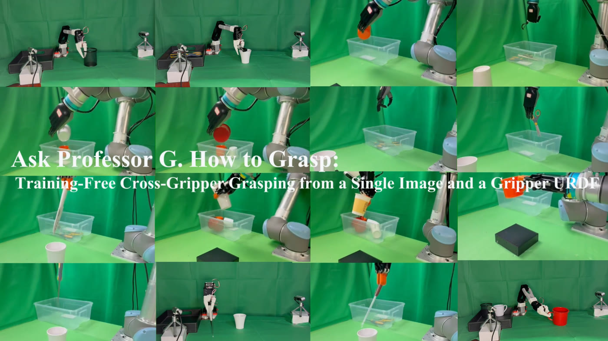
IROS 2026
Ask Professor G. How to Grasp
无需训练的跨夹爪语义抓取
面对一个没有训练数据的新夹爪，我们将跨夹爪适配转化为测试时优化：系统只接收单帧 RGB-D 观测和夹爪 URDF，不依赖为每种硬件重新采集数据或训练策略。
基础模型提供语义搜索先验，几何审计筛除不可执行候选，再通过 CEM 联合优化抓取位姿与控制条件；方法已在 MuJoCo 与真实机器人上完成验证。
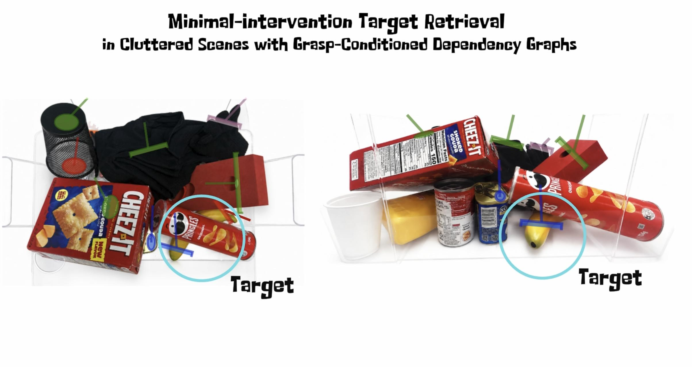
CoRL 2026 · Under Review
Minimal-Intervention Target Retrieval
哪个物体，阻塞了哪一个抓取？
在密集堆叠中，一个物体并不天然是障碍物：它是否阻塞，取决于机器人此刻想以哪种方式抓取目标。若把所有遮挡都当作障碍，系统会产生不必要的搬运。
该工作建模抓取条件下的物体–动作依赖，寻找最小必要介入集合；每次移动后，系统再基于新场景重新规划，以保持闭环决策。

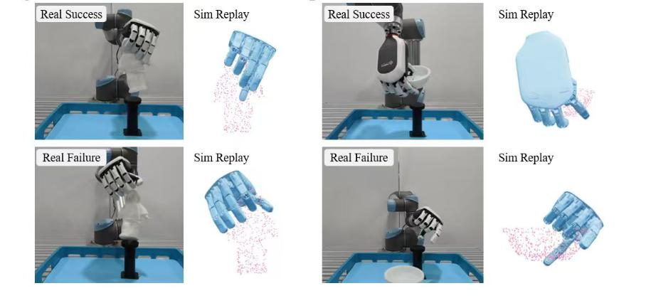
Tactile Grasp Stability · Under Review
QGMM: Dexterous Grasp Stability Prediction
面向灵巧手的触觉数据集与关节姿态条件抓取裕度表征
抓取姿态看起来合理，并不代表手指闭合后的接触能承受扰动。该工作构建了覆盖 100 个物体、100 万条 DexHand 样本的仿真触觉数据集，记录手部姿态、逐 taxel 力与接触位置，以及扰动下的稳定性标签。
QGMM 将原始接触场压缩为逐指的力、支撑点与关节裕度描述；QGMM-lite 则面向仅能获得指尖合力的部署条件。在 object-disjoint ExtraTrees 设置下，完整 QGMM 的 AP 从 0.364 提升至 0.384。
学习与工作
-
北京航空航天大学 电子信息硕士
-
清华大学智能技术与系统实验室 科研合作者
-
北京莫测未来科技有限公司 具身智能科研实习
-
重庆交通大学 通信工程荣誉学士 · GPA 4.16/5 · 专业第 1
荣誉与其他经历
我曾获得国家奖学金、重庆市三好学生、“大唐杯”国家一等奖、全国大学生数学建模竞赛国家二等奖与 MCM M 奖，并作为第一发明人申请文物碎片三维匹配与数字化修复专利。
此前还做过 GNSS / IMU / UWB 多源融合、无人车与无人机实验，以及基于 Jetson Nano 的智能垃圾分类机器人。
荣誉照片墙
点击查看原图
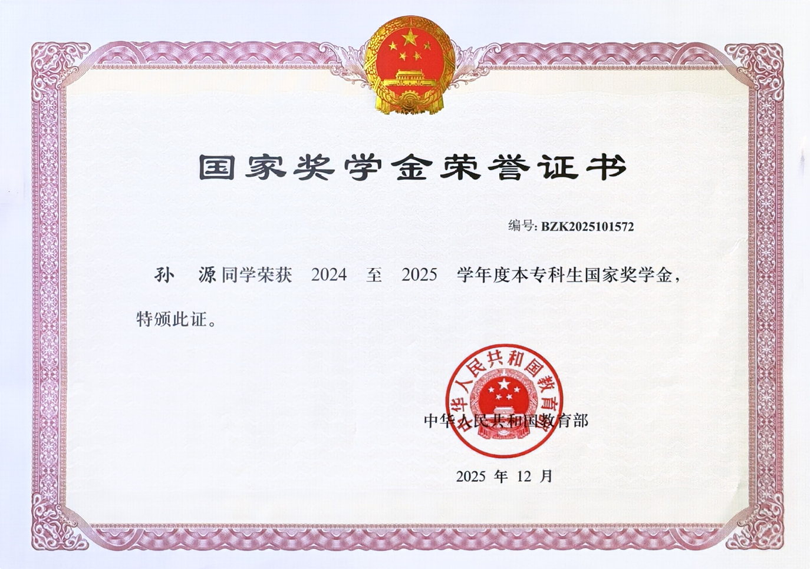
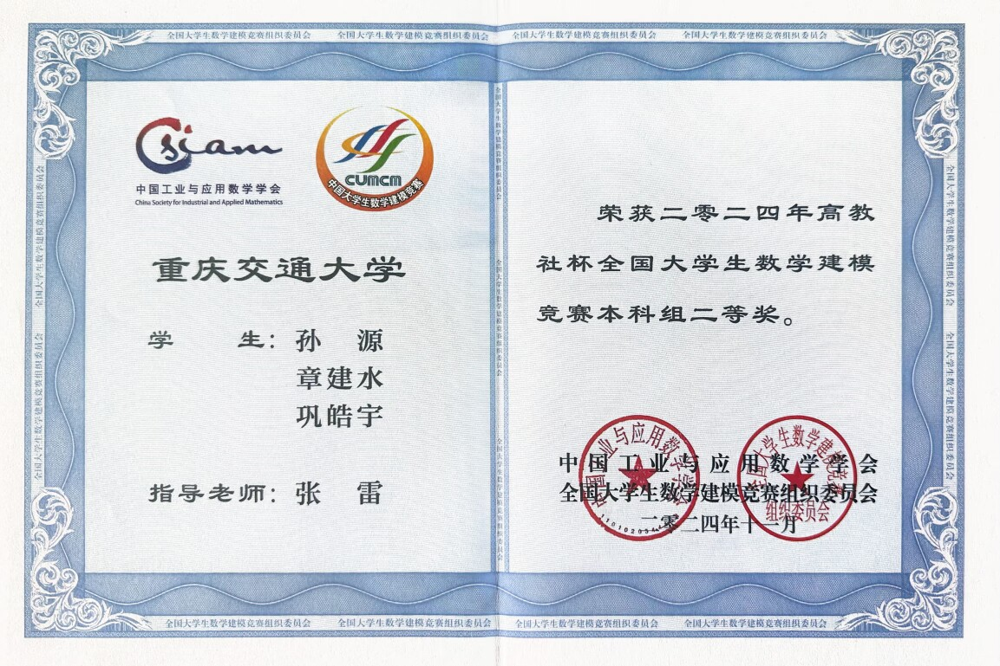
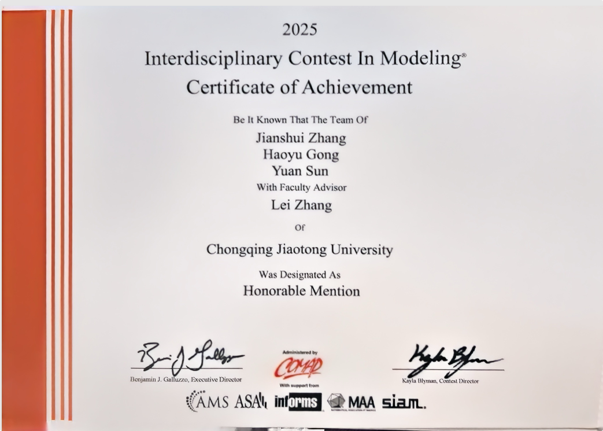
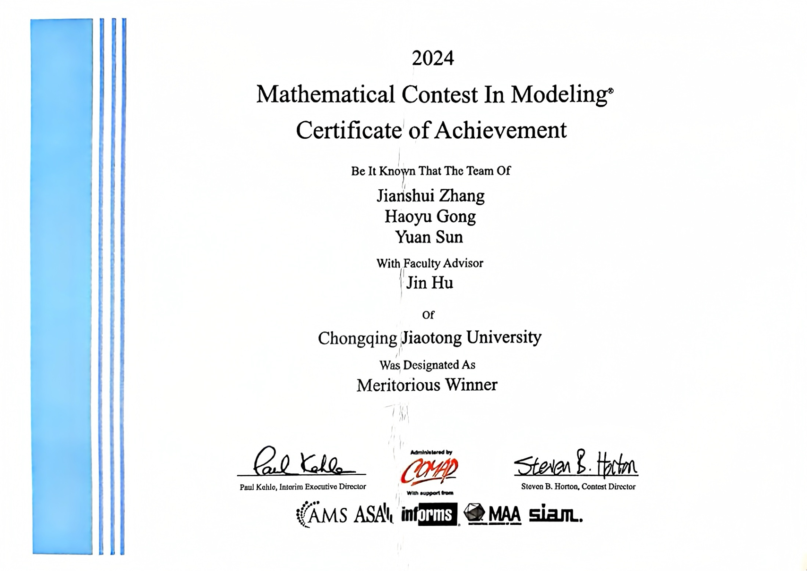
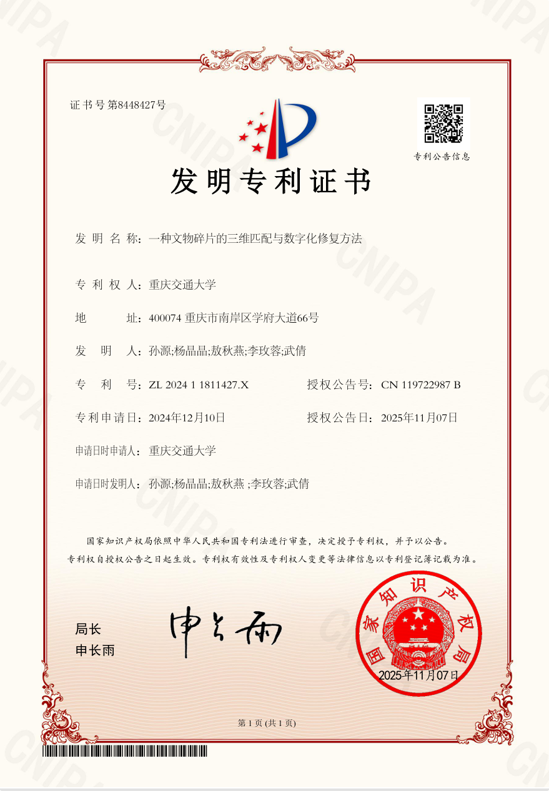
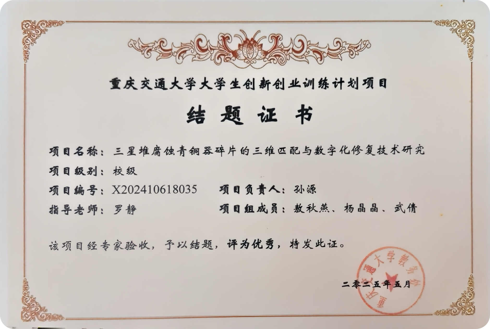
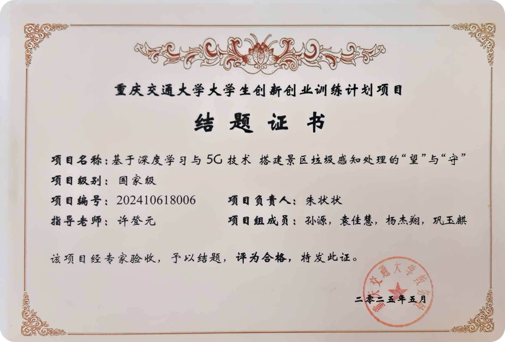
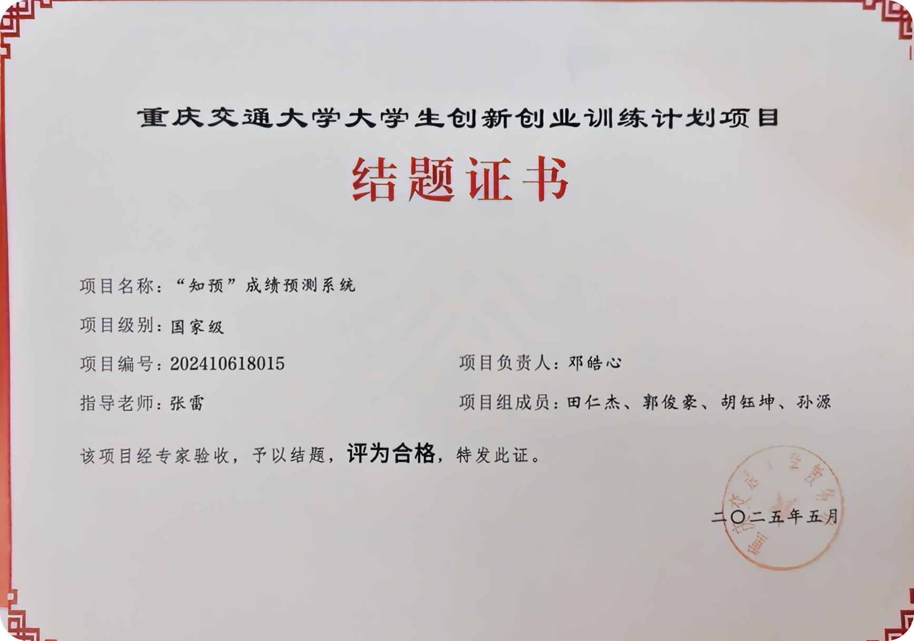
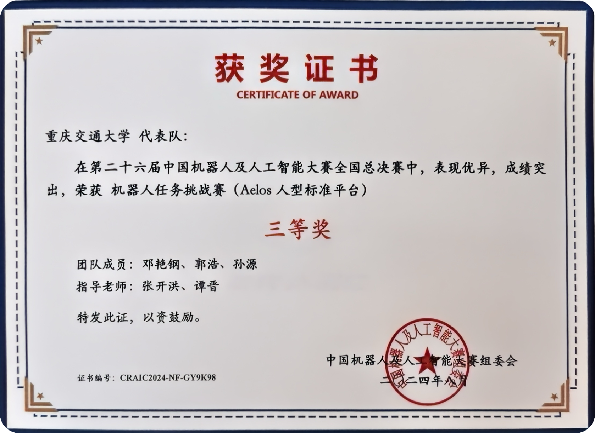
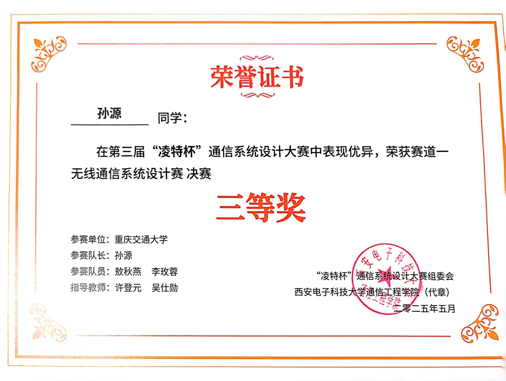
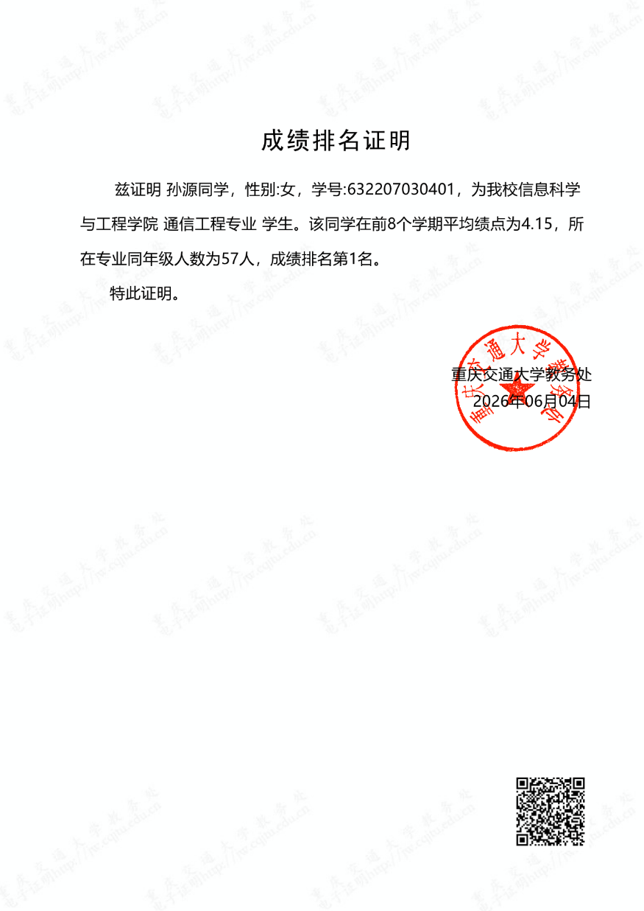